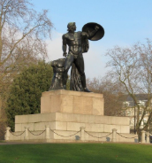
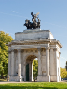
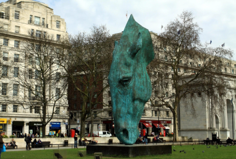
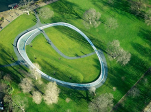

Hyde Park for junior classes
Hyde Park is a royal park in the center of London. It is adjacent to Kensington Gardens to the west.
Attractions





The Serpentine Lake, which is officially open for swimming during the summer season.
In the southeastern corner of the park, there is Epsley House, which houses the Duke of Wellington Museum, and the Wellington Arch. These sites were built in memory of the historic parade held in Hyde Park in 1815 to celebrate Wellington's victory over Napoleon.
The Bronze Statue of Achilles is known for being the first sculpture of a naked man erected in London.
The Wellington Arch is a monumental structure topped by a statue of the goddess of victory. The arch was erected in honor of the British army's triumph over Napoleon's forces.
The monument "Calm Water" is recognizable by its huge horse head drinking water.
Hyde Park stands out among the others because it has long been the site of various rallies (there is even a designated area called the Speakers' Corner) and celebrations. Today, it is a popular and beloved recreational area for Londoners.
The Princess Diana Memorial Fountain has an unusual shape, resembling a bowl. The water flows slowly down one channel, symbolizing a peaceful and bright period in Diana's life, while it flows rapidly down the other channel, like a mountain stream, representing the challenges and tragedies she faced.
Queen Victoria chose Hyde Park as the site of the first-ever World's Fair in 1851, for which a "new wonder of the world" - the Crystal Palace (not preserved) was erected in the park.
The history of the British Hyde Park
Several centuries ago, this land belonged to Westminster Abbey. In general, and recreation area as such there was not - on the modern territory of the park was once a forest.
King of England Henry VIII seized this land from the abbey. The king and his courtiers went hunting there. At the same time, the territory was closed to the general public. It was only in 1637 that King Charles I allowed everyone to visit this place, which was gradually transformed into a park and became a favorite vacation spot for London residents. In 1728, the wife of George II (Queen Caroline) ordered the huge territory of the park to be divided.: This is how Lake Serpentine appeared.